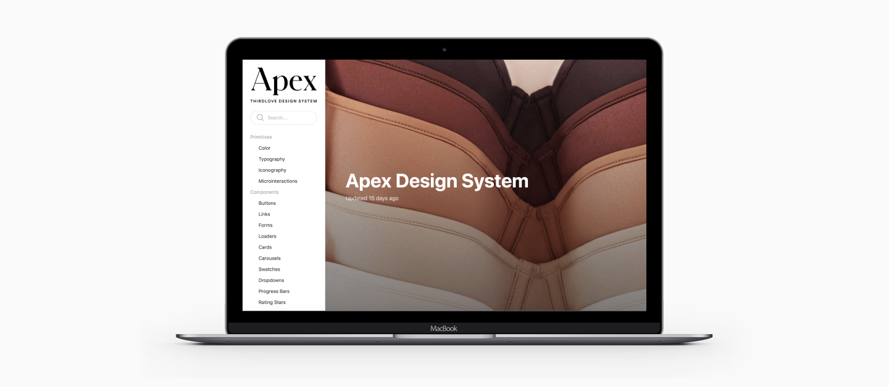
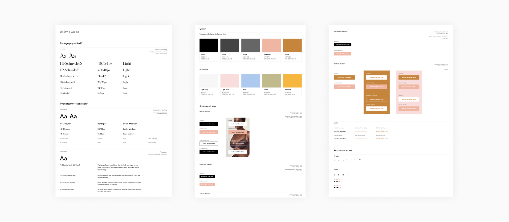
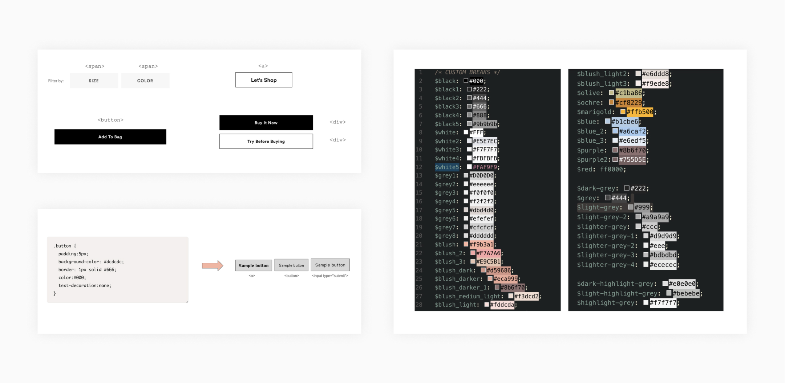

Apex Design System
Case Study
In the following case study, I’ll present the steps that we’ve followed to come up with the basis of it, the people involved, the challenges, tools used, and what we expect to achieve in the future.

Intro
ThirdLove is an American company that produces and sells bras, underwear, and loungewear. The teams have grown significantly over the past few months, and the number of engineers working on features on the different parts of the website has made us reflect on how we should approach the design & development process.
We knew we had a problem because every time a new person joins the team, they would design and/or build components their way.
We went through a big rebrand at some point, and that’s another “wake-up call” that made us realize the huge inconsistency and how complicated was updating everything across our platform. We had a basic style guide, but it wasn’t enough, the defined elements were not 100% representative of what we had in our repositories and what was live in production. So after some discussion, we knew that having a design system was the answer to our problem.
My Role
By the time we decided to start working on it, we were 3 UX designers in the team, and the rest a mix of Full-stack engineers, QA engineers, and Product Managers.
I would consider myself a full-stack UX / Product Designer because I know how to build components with HTML/ CSS and some vanilla Javascript, so I was the one with the initiative to work at least 50% on our design system and 50% on UX related projects.
Where to start?
We asked ourselves whether we should focus on typography, colors, spacing, or maybe buttons. But the reality was that we were not entirely sure where, to begin with.
Something was 100% certain, we knew why we wanted a Design system:
- We knew we had to do something to reduce our technical and design debt.
- Many engineers come from companies that already had a design system, so we had evidence that the development speed would improve significantly.
- We wanted to improve consistency by updating our existing style guide.

Step 1: The Research & Audit
Before going in and start working on anything. I decided to read, read and read more. I joined an amazing slack group called Design Systems, to find out about good practices, and I also read a couple of amazing books: “Design Systems” by Alla Kholmatova, and “Atomic Design” by Brad Frost.
In order to find out what was the level of irregularity in our UI, I decided to take action. I opened a google sheet file and started to take screenshots of all our buttons. I thought starting with this basic component would be fun as well.
At first, I also wanted to uncover CSS & HTML issues so I created different columns, one for the screenshot, another for the section where the button was located, URL, whether it was in line or not with our official UI style guide stored on Zeplin, and finally the HTML used to create the button.
I was able to discover to my surprise that some developers were defining buttons using the wrong HTML elements like SPAN, DIV, and some would use INPUT or BUTTON. What’s interesting about this is the fact that some browsers render those elements very differently!
The same thing happened with colors when it came to the naming convention. The root cause was the fact that we only had the “brand” colors defined in our style guide. No shades or tints were ever defined. There were even duplicated variables, for instance, some devs were defining a grey shade as $lighter-grey-2 or $grey2, and they both would have the same value! A complete mess!

- There were colors that were not in use anymore
- No naming convention defined
- Big discrepancy between the official style guide and the colors sass file
Conducting an audit allowed me to visualize the level of inconsistency, the number of instances where the colors were used, and also allowed me to merge and remove colors we didn’t need.
I came up with a new naming convention using the greek alphabet. The idea was to depart from variable names that used the actual colors, so if in the future there’s a rebrand, replacing the variable values would simplify the process significantly.
I’ve followed the same process with typography, iconography, spacing, breakpoints, and micro-interactions.
Step 2: The Sketch Libraries
By the time I’ve started auditing, there was no official sketch UI kit with symbols in place. Each designer would have his/her files to try to speed up the process, but there was no common source of truth.
We thought using Sketch Libraries was the perfect remedy for potential design collaboration issues when working as part of a team. You can sync, share and update Symbols across all of your documents, allowing your designs to stay consistent and up-to-date when working on a project of any size.
You can potentially share a Library by either storing it on a Local Server, by using a Cloud Service such as Dropbox, or even via a Version Control system like GitHub or Abstract. As a result, you and your teammates can have access to the same Libraries from one central location.
In our case, we decided to use google drive to store and sync the files.
Step 3: The Name & Documentation
We didn’t know what tool to use. We knew there were several options. I created a slack channel and I asked engineers and other product designers to recommend options. We explored Frontify, we considered using WordPress, and I even played around a bit with static site generators like Gatsbyjs based on React. It was fun!
We needed something easy to manage because the documentation site would be updated also in the future by other team members like copywriters to include voice & tone, or visual designers to add illustrations or other assets.
After trying different options, I found a great tool called zeroheight. It has everything we need:
- Versioning & password protection
- Edit pages similar to google docs, super simple!
- Sync sketch libraries with the documentation site
- Connect documentation with storybook & github
- Publish code snippets where necessary
I connected with our Chief Design Officer to define a name for our design system. So I suggested different names from “Audrey” (in honor to Audrey Hepburn) to “Frida” (in honor to Frida Khalo), but the name that resonated the most was APEX. Why Apex? For those who don’t know, this is the definition: “it’s the section of the bra that connects the cup with the strap”. It made total sense as a design system does that it connects and aligns teams in an org.

Step 4: Cross Functional Collaboration
Working on a design system can be a challenge at first. Especially when you need to get the initial buy-in from leadership. Fortunately, ThirdLove is a design-driven company, so it didn’t take too much to get the initial approval.
It can be a tedious task at first, especially when auditing all the UI and making sure we had all defined in Sketch and also documented in Zero Height was a big undertaking. It’s a gradual task.
In order to keep the whole team informed, I set up a weekly catch-ups with the product & the engineering team to inform the new design pattern definitions, sometimes they would request existing components to be defined, sometimes they suggest new items. We aim to have all in sync, from sketch libraries to React components in Storybook.
Another thing we found super useful, was the design system slack channel we created. Our team is very passionate about improving our processes and they constantly post articles from Medium or other websites.
Next steps…
Maintaining a design system is not a project that starts and finishes. A design system is a living product that requires constant updates, it evolves with time.
As the team grows, and new people join us, we are likely to:
– Test new tools to make sure we version all sketch libraries our UI components.
– Research ways to define a formal approval process when new design patterns are suggested.
– Consider the possibility to have the QA Team to jump in and test new items every time we need to push them to GitHub.
– Evangelize the design system more across the teams using Slack, setting up Design systems catch-up meetings, etc…